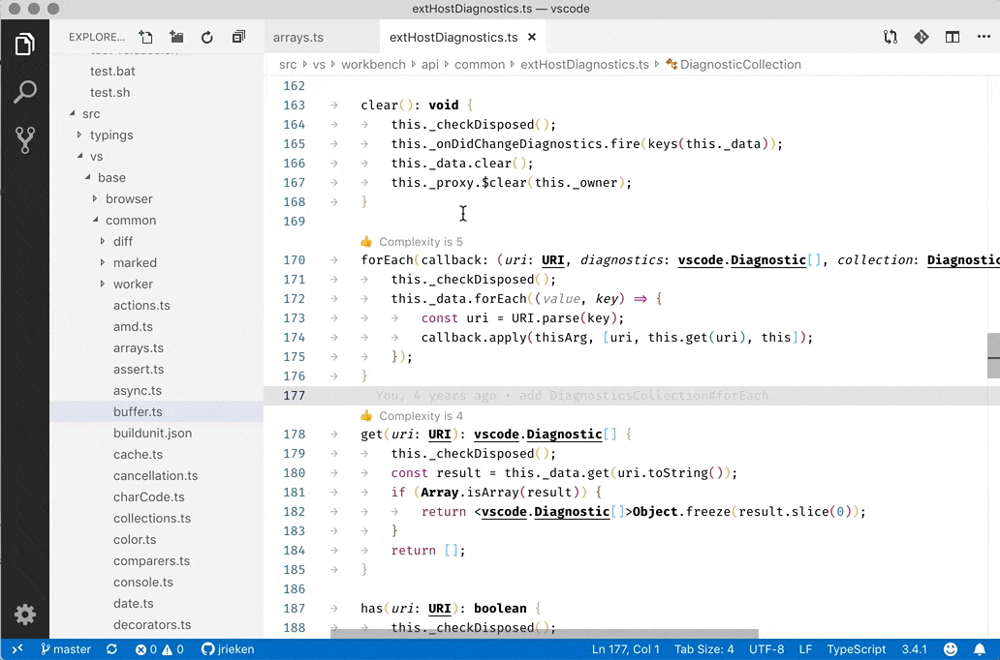
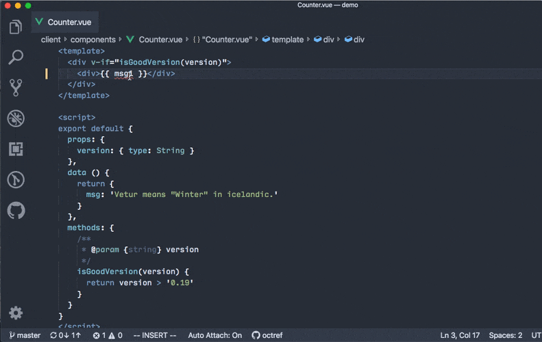

April 2019 (version 1.34)
Downloads: Windows: User System | Mac: Intel | Linux 64-bit: deb rpm tarball snap | 32-bit: deb rpm tarball
Welcome to the April 2019 release of Visual Studio Code. During April, we were busy with the Preview release of the Remote Development extensions. These extensions let you work with VS Code over SSH on a remote machine or VM, in Windows Subsystem for Linux (WSL), or inside a Docker container. You can read the Remote Development with Visual Studio Code blog post to learn more.
There were still several updates in this version that we hope you will like as well as many community contributions.
If you'd like to read these release notes online, go to Updates on code.visualstudio.com.
Editor
Stable CodeLens
VS Code now optimistically caches CodeLens locations and restores them immediately after switching editors. This fixes an issue where CodeLens lines would shift slightly when switching between editors.

Languages
Lower rank for CSS property values with vendor prefix
CSS property values prefixed with dash '-' (such as -moz-grid or -ms-grid), now come after grid in auto completion.
Debugging
debug.showSubSessionsInToolBar
We have introduced the setting debug.showSubSessionsInToolBar which controls whether the debug sub-sessions are shown in the debug tool bar. When this setting is false, the stop command on a sub-session will also stop the parent session. This setting default is false.
Tasks
Terminate all tasks
The Tasks: Terminate Task command has a new option to terminate all tasks if there are multiple tasks running. If this is an action you do often, you can create a keyboard shortcut for the command with the terminateAll argument.
{
"key": "ctrl+k t",
"command": "workbench.action.tasks.terminate",
"args": "terminateAll"
}
Automatically show Problems panel
The new revealProblems task property allows you to automatically show the Problems panel. The property values are always, never, and onProblem.
{
"version": "2.0.0",
"tasks": [
{
"type": "npm",
"script": "watch",
"problemMatcher": "$tsc-watch",
"isBackground": true,
"presentation": {
"reveal": "always",
"revealProblems": "onProblem"
}
}
]
}
Contributions to extensions
Preview: Remote Development
❗ Note: The Remote Development extensions require Visual Studio Code Insiders.
Visual Studio Code Remote Development allows you to use a container, remote machine, or the Windows Subsystem for Linux (WSL) as a full-featured development environment.
The extensions in the Remote Development extension pack run in the context of the remote workspace while VS Code feels like it does when you run locally.
Vetur
The Vetur extension now offers semantic diagnostics, hover information, jump to definition, and find references for the JavaScript expression inside Vue's template interpolation region:

You can read more about this feature in the Vetur documentation.
Other improvements include reduced memory usage and import path completion. You can learn more about them in the Vetur changelog.
Extension authoring
Multi-extension debugging
In this milestone, we've added support for debugging more than one extension at a time. This is useful if you are developing a set of tightly coupled or interdependent extensions.
Previously this feature was only surfaced via the command line interface of VS Code, now the argument --extensionDevelopmentPath can be specified more than once. Typically --extensionDevelopmentPath is used in the launch configuration of an extension. When developing more than one extension, we recommend combining the individual extension projects into a multi-folder workspace and create a new launch configuration (stored in the workspace .code-workspace file) that uses multiple --extensionDevelopmentPath arguments for the individual extensions.
Here is an example workspace .code-workspace file with two extensions, hello1 and hello2, and a single launch configuration for both extensions:
{
"folders": [{ "path": "hello1" }, { "path": "hello2" }],
"launch": {
"configurations": [
{
"type": "extensionHost",
"request": "launch",
"name": "Launch Two Extensions",
"args": [
"--extensionDevelopmentPath=${workspaceFolder:hello1}",
"--extensionDevelopmentPath=${workspaceFolder:hello2}"
],
"outFiles": [
"${workspaceFolder:hello1}/out/**/*.js",
"${workspaceFolder:hello2}/out/**/*.js"
]
}
]
}
}
Please note that in this release, it is not possible to create a preLaunchTask that builds both extensions by combining the preLaunchTasks of the individual extension projects.
Command links in notifications
It was always possible to include links in notification messages via the syntax [link name](http://link), but this only worked for links that open in a browser. Now you can also invoke a command from a link with the syntax [link name](command:<command id>). The command with the provided identifier will be triggered when the user clicks the link.
Links in notifications allow for title
You can now add a title to links in notifications that will be shown when the user hovers over the link. The syntax is [link name](link "<the title>").
Proposed extension APIs
Every milestone comes with new proposed APIs and extension authors can try them out. As always we are keen on your feedback. This is what you have to do to try out a proposed API:
- You must use Insiders because proposed APIs change frequently.
- You must have this line in the
package.jsonfile of your extension:"enableProposedApi": true. - Copy the latest version of the vscode.proposed.d.ts file into your project.
Note that you cannot publish an extension that uses a proposed API. We may likely make breaking changes in the next release and we never want to break existing extensions.
vscode.workspace.workspaceFile
There is a new workspace property returning the location of the workspace file. For example: file:///Users/name/Development/myProject.code-workspace or untitled:1555503116870 for a workspace that is untitled and not yet saved.
Depending on the workspace that is opened, the value will be:
undefinedwhen no workspace or a single folder is opened.- The path of the workspace file as
Uri.
If the workspace is untitled, the returned URI will use the untitled: scheme.
One use of the workspace file location is to call the vscode.openFolder command to open the workspace again after it has been closed:
vscode.commands.executeCommand('vscode.openFolder', uriOfWorkspace);
Note: It is not recommended using the workspace.workspaceFile location to write configuration data directly into the file. You can use workspace.getConfiguration().update() which will work both when a single folder is opened as well as an untitled or saved workspace.
Machine-specific settings
If you have settings that allow users to customize an executable path and if these paths need to be scoped to the machine they are running on, you can now classify such settings as machine scoped. Extension authors set the scope property when contributing to the configuration extension point. Machine-specific settings can only be configured for User settings.
"configuration": {
"title": "Git",
"properties": {
"git.path": {
"type": [
"string",
"null"
],
"markdownDescription": "Path and filename of the git executable.",
"default": null,
"scope": "machine"
}
}
}
Engineering
Rewritten filesystem provider for local files
Extensions have been able to provide their own filesystem implementations for custom resources (read more here). However, VS Code's own implementation for local files was not implemented with the same extension APIs. This resulted in subtle differences when dealing with local file resources compared to resources coming from extensions. Over the last two milestones, we rewrote our local file system provider to use the extension APIs for consistency.
New documentation
Python Azure Functions
There is a new Deploy Python to Azure Functions tutorial that describes how to create and deploy Python serverless Azure Functions.
Miscellaneous
Language Server Protocol
The Language Server Protocol has proposed support for the following new features:
- Selection ranges: to compute selection ranges for an array of positions. Sent from client to server.
- Call hierarchy: to compute a call hierarchy for a given symbol. Sent from client to server.
- Progress: to initiate progress reporting from the server. Sent from server to client.
The new features are available in the next versions of the vscode-languageclient and vscode-languageserver npm modules.
Notable fixes
- 48259: Explorer Respects Trash Capability from FileSystemProvider
- 68276: Call Stack "Paused On Breakpoint" UI not visible for long thread names
- 69603: Terminal window crashes in Mac OS
- 72110: Debug Console render newlines unnecessary
- 71737: Scrolling in debug window is behaving strange
- 71588: Error revealing files in the explorer
- 70492: ‘Report issue’ button on ‘Running extensions’ causes tens of duplicate issues
Thank you
Last but certainly not least, a big Thank You! to the following folks that helped to make VS Code even better:
Contributions to our issue tracking. Please see our Community Issue Tracking page, if you want to help us manage incoming issues:
- John Murray (@gjsjohnmurray)
- Prabhanjan S Koushik (@skprabhanjan)
- Alexander (@usernamehw)
- Muhammed Emin TİFTİKÇİ (@jaqra)
- Carl Morris (@msftrncs)
Contributions to vscode:
- @alpalla: Fixes #27041 PR #72015
- @BaluErtl: Incorrect wording of Outline drawer default message PR #73214
- @cmchumak: Improved messaging when running a task with no workspace PR #71476
- Connor Shea (@connorshea): Display extensionId as the description in the formatter dropdown PR #71910
- Alexandr Fadeev (@fadeevab): Makefile test case about the bug fix with "@,-,+" colorizing in the recipe PR #72265
- Nikita Shilnikov (@flash-gordon): Fix typo in localization key PR #72718
- Hung-Wei Hung (@hwhung0111): Fix typo in code-cli.bat PR #73091
- Ian Sanders (@iansan5653): Add support for 8- and 24-bit ANSI escape color codes in the debug console PR #70935
- Muhammed Emin TİFTİKÇİ (@jaqra): Added title case transformation command called 'Transform to Title Case'. PR #70990
- Jimi (Dimitris) Charalampidis (@JimiC): [themes] Fix explorer arrows notification on reload PR #71855
- Jon Bockhorst (@jmbockhorst)
- Johannes Wikman (@jwikman): FindInFiles converted to command and accepting arguments PR #71626
- Jiaxun Wei (@LeuisKen): fix #72187 PR #72194
- Luís Ferreira (@ljmf00): theme-monokai: fix tabs indentation PR #72269
- paul cheung (@paul-cheung): fix typos PR #72334
- Evan Bovie (@phaseOne): Add
vscode:URI prefix to knownSchemes in links.ts PR #71416 - Raman (@ramank775): Fix for "Comment box issue #71703" PR #71880
- Samuel Bronson (@SamB): json-language-features/CONTRIBUTING.md fixes PR #73273
- @sebastianwitthus: 44146 automatically show problems panel PR #71387
- Simon Siefke (@SimonSiefke): fix typo PR #71564
- Prabhanjan S Koushik (@skprabhanjan): fix-71570 Error when restoring a markdown preview for a file that has been deleted PR #71762
- Tony Xia (@tony-xia)
- Alexander (@usernamehw): Add CLI flag to be able to disable smooth scroll in webviews PR #65422
- Vitaliy Mazurenko (@vitaliymaz)
- Waleed Ashraf (@WaleedAshraf): ignore trailing white-spaces in LINE_COLON_PATTERN PR #71985
- William Whittle (@whittlec): Add 'qsh' as a valid shellscript firstline PR #73231
- Keyi Xie (@xiekeyi98): Fix misspell in build/ PR #71977
- XTY (@xtydev): Resolve regression in WSL launch script PR #72779
Contributions to vscode-css-languageservice:
- Tony Xia (@tony-xia): Fixed a minor typo PR #151
Contributions to vscode-html-languageservice:
- Liam Newman (@bitwiseman): Update js-beautify to 1.9.1 PR #58
- Christian Oliff (@coliff): Fix attribute typo PR #60
Contributions to node-jsonc-parser:
- Tony Xia (@tony-xia): JavaScipt -> JavaScript PR #18
Contributions to language-server-protocol:
- Danny Tuppeny (@DanTup): Add optional reason for why the client failed to apply an edit PR #637
- Ben Mewburn (@bmewburn): correct id in lsif textDocument/definition example PR #725
Contributions to vscode-languageserver-node:
- Igor Matuszewski (@Xanewok): Add proposed window/progress extension PR #261
- Aleksey Kladov (@matklad): adjust selectionRange API PR #474
- Ben Mewburn (@bmewburn): onImplementation and onTypeDefinition can return DefinitionLink[] PR #479
- Remy Suen (@rcjsuen): Fix a small typo PR #482
Contributions to vscode-eslint:
- Mike Martin (@mcmar): Clarify
changeProcessCWDdocumentation PR #657 - Ilias Tsangaris (@ilias-t): PR #661
- Charles Stover (@CharlesStover): Autocomplete for eslint.codeAction.disableRuleComment should insert separateLine instead of newLine PR #674
Contributions to vscode-lsif-extension:
- Chris Wendt (@chrismwendt): Fix filesystem lookup for top level files PR #9
Contributions to vscode-textmate:
Contributions to vscode-recipes:
- AJ Alves (@zerokol): Debug one specific case in a rspec file PR #207
Contributions to vscode-vsce:
- Jimi (Dimitris) Charalampidis (@JimiC): Fix compile task PR #347
Contributions to localization:
There are over 800 Cloud + AI Localization community members using the Microsoft Localization Community Platform (MLCP), with over about 100 active contributors to Visual Studio Code.
We appreciate your contributions, either by providing new translations, voting on translations, or suggesting process improvements.
Here is a snapshot of contributors. For details about the project including the contributor name list, visit the project site at https://aka.ms/vscodeloc.
- Bosnian: Ismar Bašanović.
- Czech: Daniel Padrta, David Jareš, Jan Hajek, Jiří Hofman.
- Danish: Allan Kimmer Jensen, Thomas Larsen.
- Dutch: Maxim Van Damme, Sven Klaasen.
- English (United Kingdom): Martin Littlecott, Tobias Collier, William Wood, Giorgi Jambazishvili.
- French: Antoine Griffard, Thierry DEMAN-BARCELÒ, Mohamed Sahbi, Steven Dugois, Michael VAUDIN.
- German: Christof Opresnik.
- Hindi: Abhirav Kushwaha, Pramit Das.
- Chinese Simplified: paul cheung, 斌 项, Fan Su, Justin Liu, Horie Yuan, 王文杰, 赵畅畅, anson zhang, Wang Debang, Pluwen, Yiting Zhu, Joel Yang, Michael Zhang, 擎 钟, 涛 徐, 少民 谈, 伟 全, panda small, Array Zhang, LI ZHAO.
- Chinese Traditional: 謝政廷, 煾 雪.
- Hungarian: Levente Hallai Seiler.
- Indonesian: Laurensius Dede Suhardiman.
- Italian: Alessandro Alpi, Luigi Bruno, Emanuele Meazzo, Marco Dal Pino.
- Japanese: EbXpJ6bp -, nh, Kyohei Uchida, Yoshihisa Ozaki, Seiji Momoto, Hasefumi, 迪人 熊本, Koichi Makino, Kyohei Moriyama, 美穂 山本, Aya Tokura.
- Korean: 형섭 이, Youngjae Kim, siin lee, Keunyop Lee.
- Latvian: Kaspars Bergs.
- Lithuanian: Augustas Grikšas.
- Polish: Wojciech Maj, Marek Biedrzycki, Igor 05, Marcin Weksznejder, Szymon Seliga, Paweł Modrzejewski, Michał Stojke, Artur Zdanowski.
- Portuguese (Brazil): Alessandro Trovato, Judson Santiago, Roberto Fonseca, Marcelo Fernandes, Lucas Miranda, Ray Carneiro, Loiane Groner, Daniel Luna, Lucas Santos, Saymon Damásio.
- Portuguese(Portugal): Ana Rebelo, Pedro Teixeira, João Carvalho, Tiago Antunes.
- Romanian: Alexandru Staicu.
- Russian: Andrey Veselov, Дмитрий Кирьянов, nata kazakova, Валерий Батурин.
- Spanish: Andy Gonzalez, Carlos Mendible, José María Aguilar, Alvaro Enrique Ruano.
- Tamil: Boopesh Kumar, Karunakaran Samayan, Merbin J Anselm.
- Turkish: mehmetcan gun, Sinan Açar, S. Ferit Arslan.
- Ukrainian: Sviatoslav Ivaskiv, George Molchanyuk.
- Vietnamese: Khôi Phạm, Spepirus Shouru, Việt Anh Nguyễn.